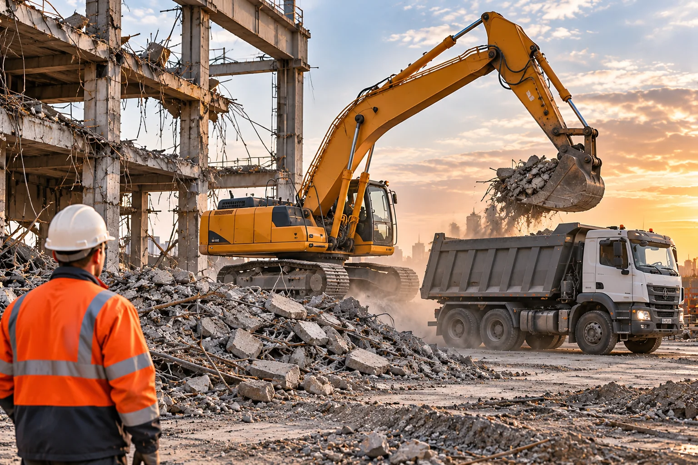
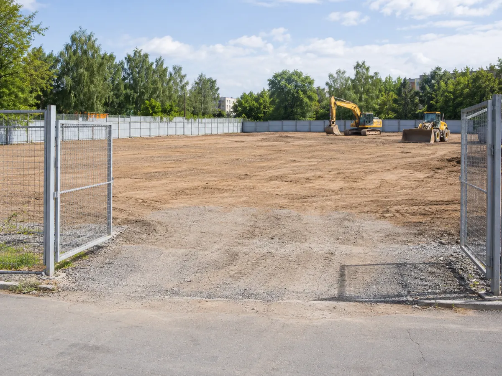

Оценка объекта
Состояние конструкций, расположение и ограничения доступа.

Организация демонтажа начинается с оценки существующего здания, условий площадки и требований к безопасности. Обсудим состав работ для твоего объекта.
Что входит в направление
Разные объекты требуют разного подхода: от анализа конструкций до согласования техники и вывоза материалов.

Состояние конструкций, расположение и ограничения доступа.
Доступ техники, ограничения соседних территорий и последовательность.
Подготовка участка к последующей строительной задаче.
Подход к реализации
Сначала определяются условия объекта, затем — возможный способ демонтажа, требования к согласованиям и обращению с материалами.
Понятный порядок работы
Изучаем объект, конструкции, доступ и ограничения.
Определяем возможные этапы, требования безопасности и технику.
Обсуждаем состав работ, вывоз и договорные условия.

Освобождённая площадка для дальнейших строительных работ
Пришли местоположение, фото, примерные размеры и описание задачи. Уточним необходимый следующий шаг.